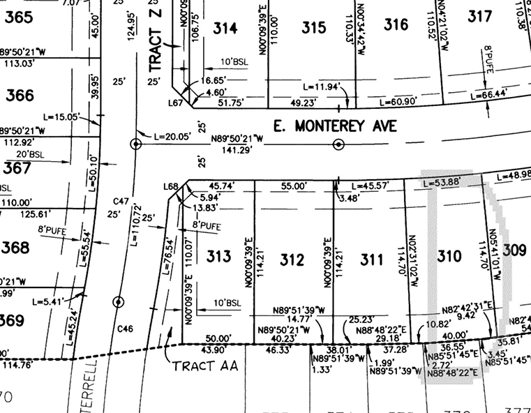
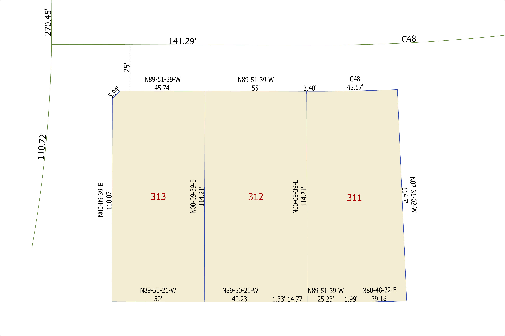

Parcel GIS / COGO
COGO Parcel Reconstruction from Recorded Plat
Maricopa County, Arizona
This project demonstrates a parcel reconstruction workflow using a recorded plat as the source reference. Bearings, distances, curve labels, parcel numbers, and visible plat calls were interpreted and recreated in ArcGIS Pro to practice parcel editing and COGO-based feature construction.
Plat Reference to GIS Reconstruction
The original recorded plat was used as the reference source on the left, while the reconstructed GIS layout on the right shows the interpreted parcel geometry, labels, bearings, distances, and curve information.
Original Plat Source

COGO interpretation
ArcGIS Pro Reconstruction

Project Goal
The goal of this project was to practice reconstructing parcel geometry from a recorded plat using COGO-style editing methods. The exercise focused on interpreting plat calls and translating them into a clean GIS layout that communicates parcel boundaries, dimensions, bearings, and curve references.
GIS Methods
- Reviewed the recorded plat map and identified visible parcel calls.
- Interpreted bearings, distances, parcel labels, and curve references.
- Used ArcGIS Pro editing tools to reconstruct parcel boundaries.
- Created parcel labels and dimension labels for the reconstructed layout.
- Compared the reconstructed parcels against the source plat for visual alignment.
- Documented the workflow as a parcel GIS / COGO practice project.
Data Sources
- Recorded subdivision plat reference
- Maricopa County parcel reference data
- ArcGIS Pro editing environment
- COGO bearings, distances, and curve call information visible on the plat
Skills Demonstrated
Key Takeaway
Parcel reconstruction requires careful interpretation of source documents, not just drawing polygons. This project shows how GIS editing workflows can translate plat information into mapped parcel geometry while preserving important survey-style details such as bearings, distances, and curve references.
Limitations
This project is a COGO practice reconstruction and should not be treated as a legal survey or authoritative parcel dataset. Some geometry may be approximate because the work is based on visible plat information, screen interpretation, and GIS editing practice rather than survey-grade field measurements.